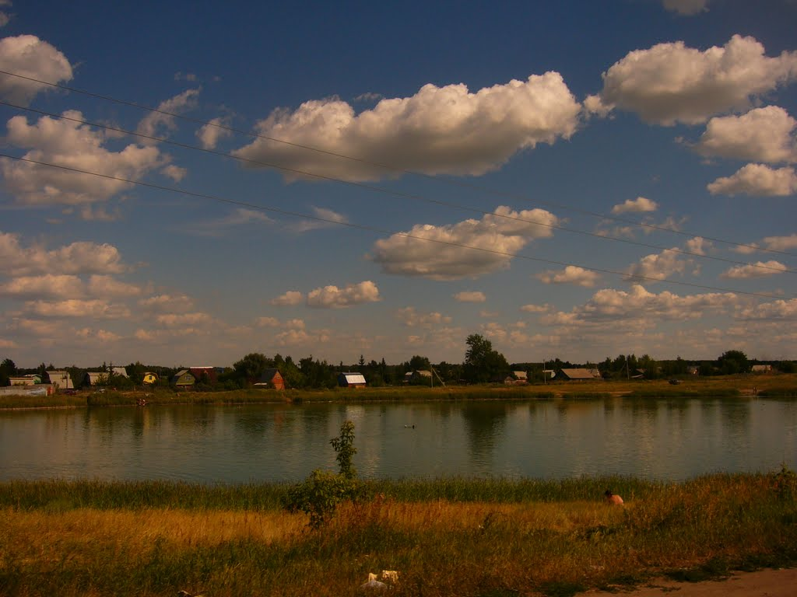
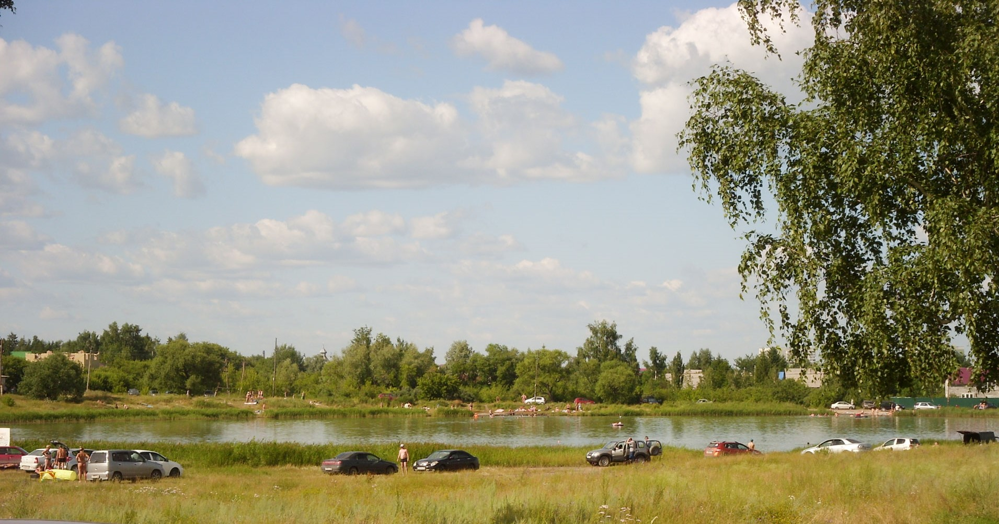

Озёра Омской области


Солёное озеро (Карьер)
Расстояние от центра Омска - 14 км
Время в пути - 20 минут
Лучшее время для отдыха - лето
Особенности - бесплатный вход, разрешено купаться, близкое расположение к городу
Озеро Солёное расположено в черте города на территории Ленинского округа около улицы им. Воровского. Является гидрологическим памятникам природы Омской области. Озеро имеет небольшие размеры — 210 метров в длину и 180 метров в ширину; глубина его составляет в среднем около 2 метров. Озеро относилось к хлоридно-карбонатно-натронно-магяезиальным. Вода в нём мутная, зеленовато-желтого цвета.
Это озеро упоминается в древнем эпосе местных кочевых племён которые жили на территории современного Омска ещё до покорения Сибири русскими землепроходцами, и называлось оно - Чёртова Яма. О причинах мрачного названия можно только догадываться: много лет скрывали это озерцо от людей белоснежные березы. В этом таинственном лесном окружении, озеро с топкими его берегами пугало народную фантазию, заставляя людей "страшиться его берегов". Отдельные случаи гибели скота, забредшего в летний зной в это озеро (грязь его обладает асасывающими свойствами), очевидно, способствовали укреплению народной легенды об озере, как о гиблом месте.

Разгадка происхождения этого удивительного озерка более прозаична и таится в том, что оно расположено на мощных отложениях соленосной глины покрытых миоценовыми песками. Но чудо творят не только соление глины, но и ряд подземных, бьющих небольшими фонтанчиками, ключей в середине водоема. Невероятие даже подумать, что этому крохотному озеру не менее четверти миллиона лет.
Солёное озеро переживало разные времена: в самом начале 20-го века оно было едва не уничтожено из-за промышленной разработки песка в его окрестности. В 1923 году на нем была организована лечебница государственного значения "Карьер"- грязи озера официальной медициной были признаны лечебными, а к середине прошлого века озеро стало заброшенным и непопулярным местом.
Сейчас Солёное озеро не в лучшем состоянии: на его берегах моют машины, возле озера проложена трасса. Но, не смотря на это, многие люди заезжают туда летом, чтобы искупаться, не считая Карьер худшим местом для этого. Единственный минус, напрягающий многих отдыхающих - это отсутствие кабинок для переодевания.